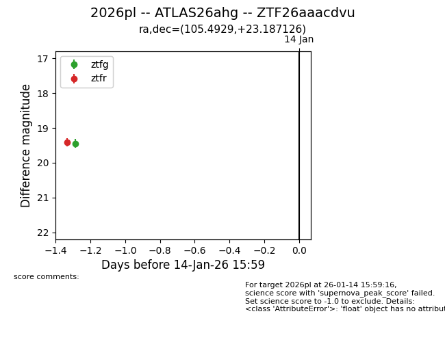
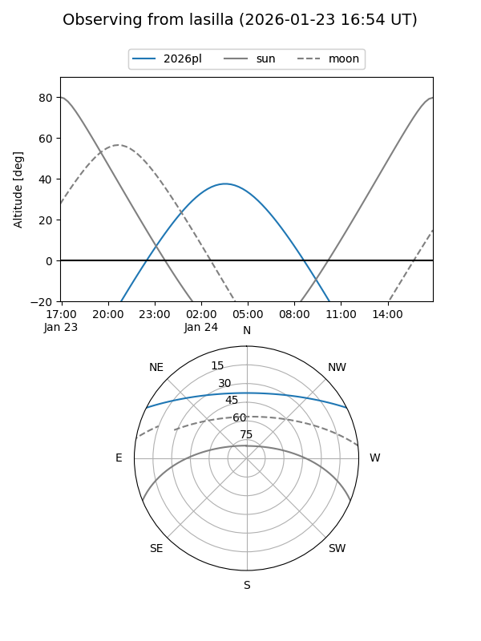
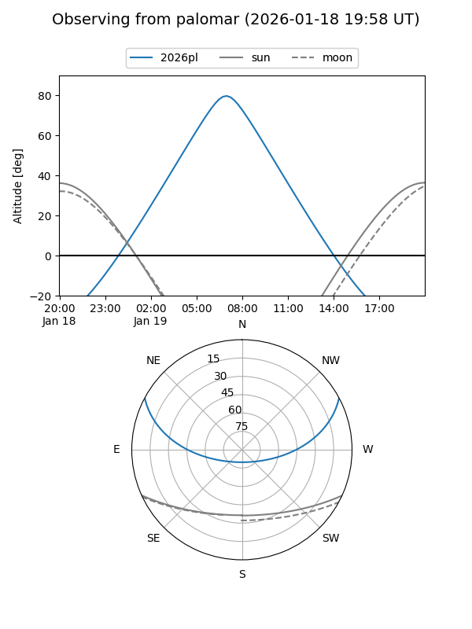
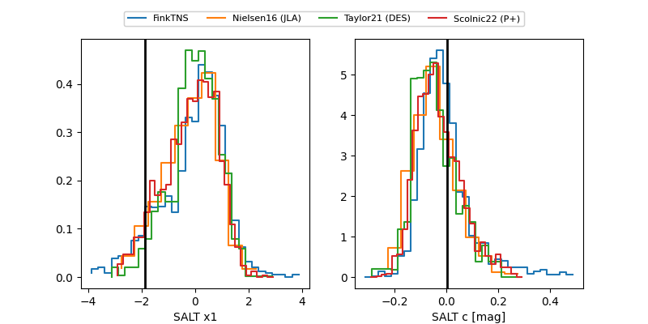

2026pl
Target 2026pl at 2026-01-26 18:56
Aliases and brokers:
FINK: link
Lasair: link
ALeRCE: link
TNS: link
YSE: link
alt names
ZTF26aaacdvu (ztf,fink_ztf)
2026pl (tns,yse)
ATLAS26ahg (atlas)
Coordinates:
equatorial (ra, dec) = 105.4929,+23.18713
equatorial (HMS+DMS) = 07:01:58.31,+23:11:13.65
galactic (l, b) = (193.1005,+12.54026)
Flags:
Photometry:
last ztfg=19.95, ztfr=19.72
3 ztfg, 4 ztfr detections
Lightcurve

Visibility


Additional plots
